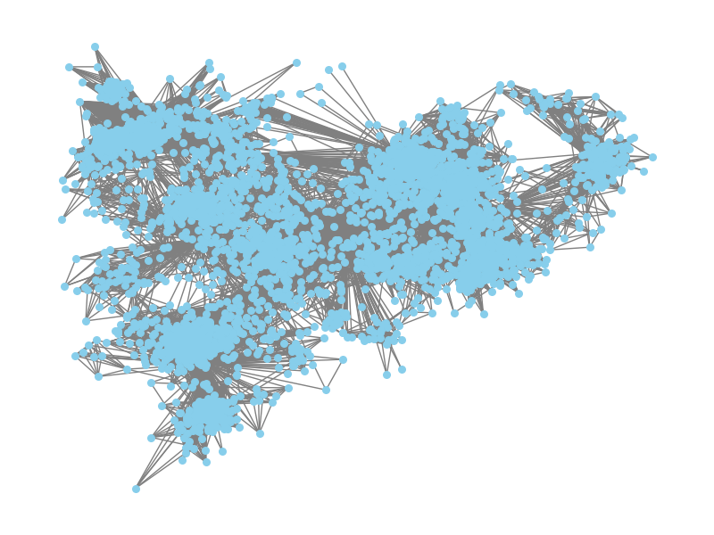

Project Overview
This project examines whether influencers within a Facebook community network also function as central nodes. It analyzes various network structures and investigates how different communities interact with one another.
Data Requirement
- Facebook Network Graph
- Facebook Cirlces
- Facebook Edge
- Facebook Ego
- Facebook Egofeat
- Facebook Feat
- Facebook Featnames
Tracking Dataset Assembly
Python

!pip install networkx matplotlib
import networkx as nx
import matplotlib.pyplot as plt
# Step 1: Read the .txt file containing pairs of nodes
edges = []
# Read the file and extract pairs of nodes
with open("/content/network/facebook_combined.txt", "r") as file:
for line in file:
# Split each line into two nodes and append as a tuple
nodes = line.strip().split() # Remove leading/trailing whitespace and split by space
if len(nodes) == 2: # Ensure each line contains exactly two elements
edges.append((int(nodes[0]), int(nodes[1]))) # Convert to integers and append
# Step 2: Create a graph from the edges
G = nx.Graph() # Use nx.DiGraph() if the network is directed
# Add edges to the graph
G.add_edges_from(edges)
# Step 3: Plot the network
plt.figure(figsize=(8, 6)) # Optional: set figure size
nx.draw(G, with_labels=False, node_size=30, node_color='skyblue', edge_color='gray')
plt.title("Network Plot")
# Save the figure
plt.savefig("network_plot.png") # You can change the file name and format (e.g., .jpg, .pdf)
# Show the plot
plt.show()
Conclusion
The project demonstrates that influencers are not always the most central nodes in a Facebook network, influence can also emerge from strategically connected nodes across communities, emphasizing the role of network structure in shaping interactions. Understanding community interactions provides deeper insight into how information flows.